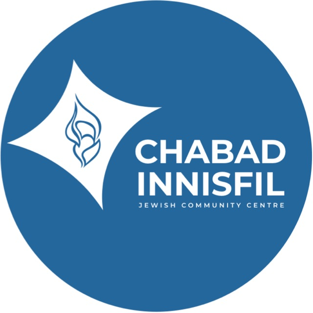

Chabad of Innisfil — Grant Scout
Open the page, read the table, copy a prompt when ready to apply.
 Good luck — B"H
Good luck — B"H
Last updated
Loading...
Loading...

Open the page, read the table, copy a prompt when ready to apply.
Good luck — B"H
| Funder / Program ⇅ | Category ⇅ | Amount ⇅ | Deadline ⇅ | Status ⇅ | Application | Notes |
|---|